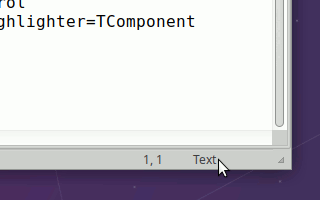
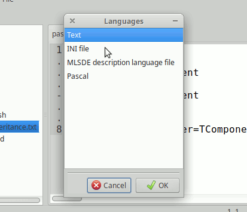

MLSDE will identify the language by the file extension. The name will be shown in the status bar, on the left.
If you click in the language name in the status bar, a dialog with all available languages will appear. Select one and press Ok to select it.


Except for a few built-in languages, MLSDE loads the language definitions from files. Such files are in the application data.
You can add more languages in that directory or in a subdirectory named syntaxis inside the user directory. The files are plain text files; I'll explain them in the future but you can use one of the given files as template.